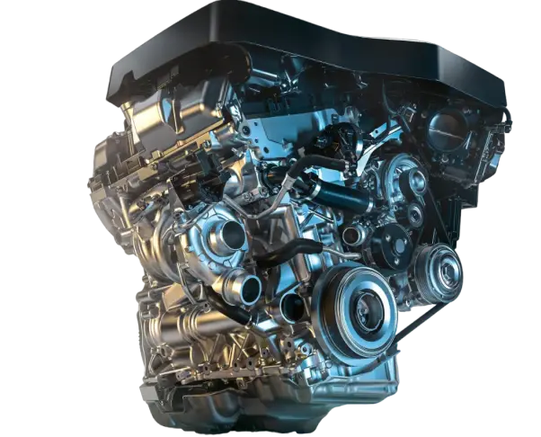

Выбери свою модель
Невероятная динамика и инновационные технологии BMW 5 серии дополняют высочайший уровень комфорта, безопасность и, самое главное, непередаваемое удовольствие от вождения, которое автомобиль дарит как в каждодневных, так и в дальних поездках.
Впечатляющие особенности экстерьера и интерьера
Спортивные характеристики и ощущение уверенности BMW 5 серии выведены на принципиально новый уровень — в первую очередь за счет традиционных пропорций BMW: длинной колесной базы, удлиненного капота и плавной линии крыши. Точные контуры кузова создают удивительный контраст с обтекаемыми поверхностями уменьшенной площади, формируя современный и лаконичный образ.
Экстерьер
19" легкосплавные диски V-spoke 635; доступны и другие варианты колесных дисков
Ассистент вождения Professional
Адаптивные светодиодные фары
Наружные зеркала заднего вида с автоматическим затемнением
Интерьер
Спортивные сиденья водителя и переднего пассажира
Автоматический климат-контроль
Велюровые напольные коврики
Комфортная подсветка салона
Сиденья с отделкой Sensatec с перфорацией «Коньяк»; доступны и другие варианты отделки
Декоративные планки «Алюминий» с акцентными вставками «Жемчужный Хром»; доступны и другие варианты декоративных планок
Рядный турбиновый 4-цилиндровый бензиновый двигатель
Двигатель BMW B48 — рядный четырехцилиндровый бензиновый мотор с турбонаддувом, который пришел на смену двигателю N20. Среди особенностей стоит отметить турбокомпрессор Twin Scroll MHI TD04LR6W с двойной спиралью и отдельным контуром охлаждения, непосредственный впрыск, 16-клапанную ГБЦ с гидрокомпенсаторами, ЭБУ Bosch MG1, систему регулирования подъема клапанов Valvetronic и систему изменения фаз газораспределения Double VANOS.
ДИЗАЙН BMW 5 СЕРИИ
От 5 120 000 ₽